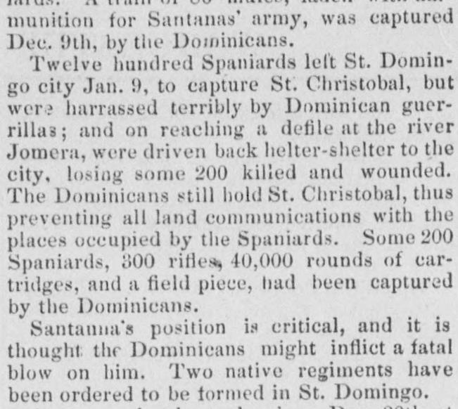
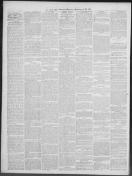

Wer harrassed terribly by Dominican guerrillas; and on reaching a defile at the river JomeraFueron terriblemente hostigados por las guerrillas dominicanas; y al llegar a un desfiladero en el río Jomera
Worcester Daily Spy. Worcester [Mass.], January 20, 1864. Page 2.Worcester Daily Spy. Worcester [Mass.], 20 de enero de 1864. Página 2. View the originalVer el original


See the full pageVer la página completaThe Worcester Daily Spy reported that Spanish forces suffered defeats and heavy casualties against Dominican guerrillas, including losses at the river Jomera and a severe battle on December 20th at Puerto Plata. The report noted that Dominicans held St. Christobal, cut off Spanish land communications, captured various supplies and equipment, and placed Santanna in a critical position. Additionally, the newspaper included a brief dispatch from Fairfax Court House regarding a minor skirmish with rebels near Flint hill.El Worcester Daily Spy informó que las tropas españolas sufrieron derrotas y copiosas bajas frente a las guerrillas dominicanas, incluidos reveses en el río Jomera y una recia batalla librada el 20 de diciembre en Puerto Plata. El parte señalaba que los dominicanos dominaban San Cristóbal, habían cortado las comunicaciones terrestres de los españoles, capturado diversos pertrechos y provisiones y colocado a Santana en una situación sumamente comprometida. Además, el periódico incluyó un breve parte de Fairfax Court House relativo a una escaramuza menor con rebeldes confederados cerca de Flint Hill.
FULL TEXT:TEXTO COMPLETO:
Twelve hundred Spaniards left St. Domingo city Jan. 9, to capture St. Christobal, but were harrassed terribly by Dominican guerrillas; and on reaching a defile at the river Jomera, were driven back helter-shelter to the city, losing some 200 killed and wounded. The Dominicans still hold St. Christobal, thus preventing all land communications with the places occupied by the Spaniards. Some 200 Spaniards, 300 rifles, 40,000 rounds of cartridges, and a field piece, had been captured by the Dominicans.Mil doscientos españoles salieron de la ciudad de Santo Domingo el 9 de enero, para capturar San Cristóbal, pero fueron acosados terriblemente por guerrillas dominicanas; y al llegar a un desfiladero en el río Jomera, fueron empujados atrás desordenadamente a la ciudad, perdiendo unos 200 muertos y heridos. Los dominicanos todavía sostienen San Cristóbal, impidiendo así todas las comunicaciones terrestres con los lugares ocupados por los españoles. Unos 200 españoles, 300 rifles, 40,000 cartuchos, y una pieza de campaña, habían sido capturados por los dominicanos.
Santanna's position is critical, and it is thought the Dominicans might inflict a fatal blow on him. Two native regiments have been ordered to be formed in St. Domingo.La posición de Santana es crítica, y se piensa que los dominicanos podrían infligirle un golpe fatal. Dos regimientos nativos han sido ordenados formarse en Santo Domingo.
This collection gathers the coverage of the Dominican Republic in the American press, in the order it was published.Esta colección reúne la cobertura de la República Dominicana en la prensa estadounidense, en el orden en que se publicaron.